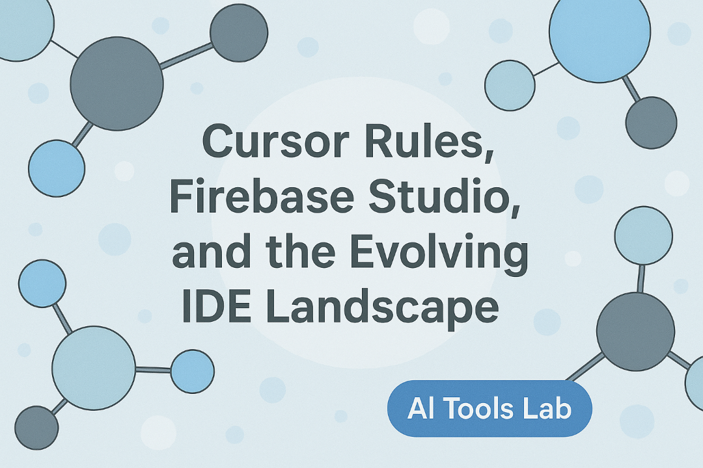
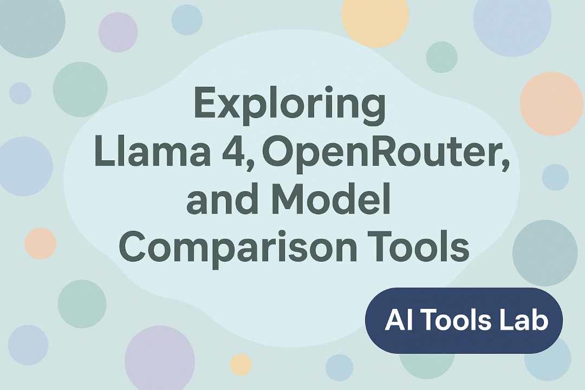
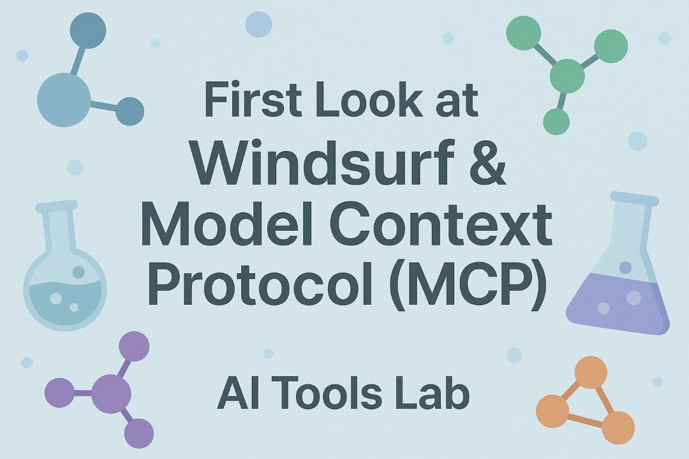
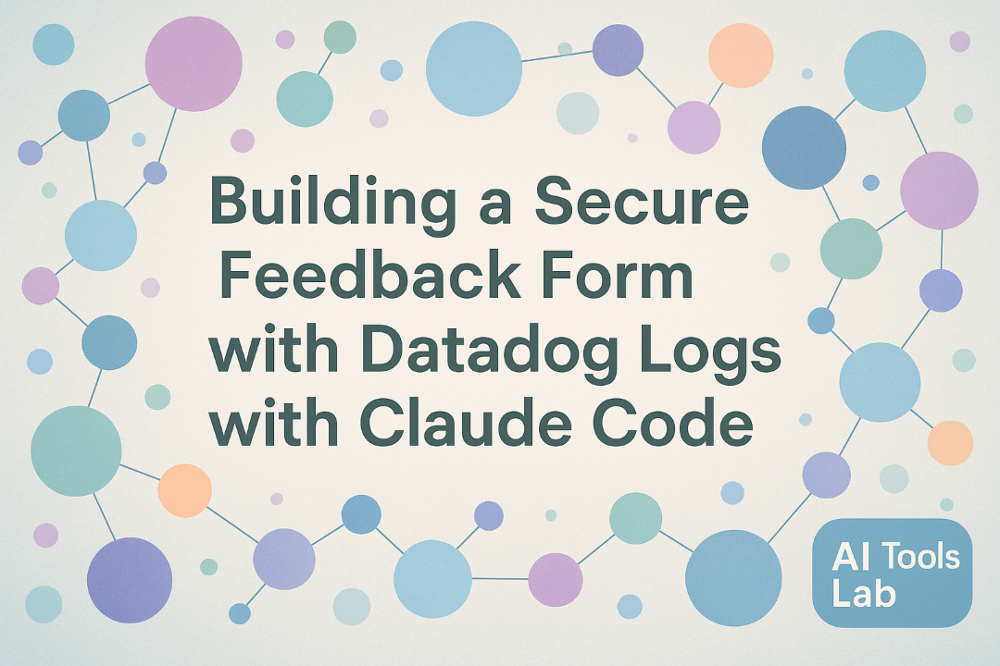
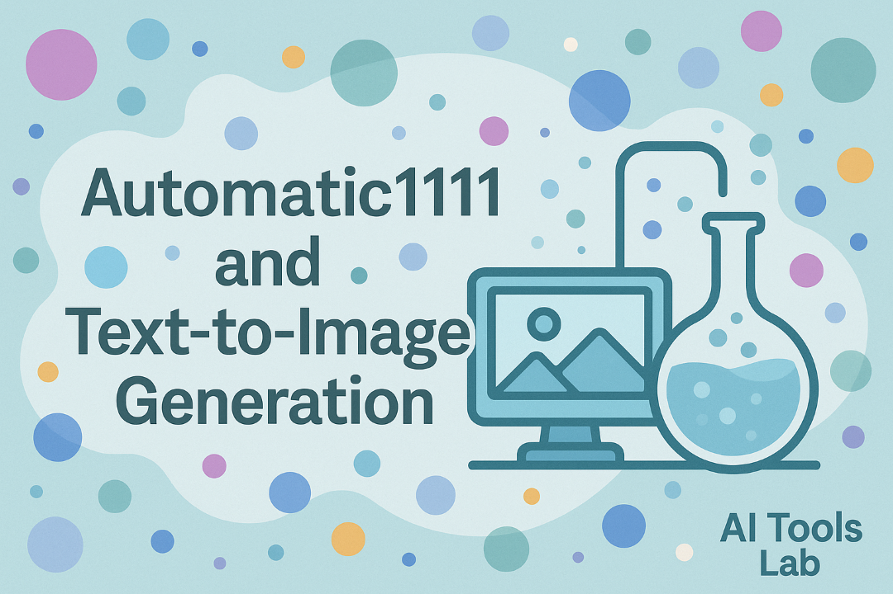

Observations & Insights
Discover patterns, insights, and key takeaways from our AI tools exploration journey. Filter by tools, technologies, or concepts to focus on specific areas of interest.
Takeaways
Trends & Patterns
Tools Comparison

Episode 20
YOLO Coding: Migrating from Static HTML to Astro with AI Tools
- AI 'YOLO Mode' can significantly accelerate website migrations, but requires constant human supervision to prevent security risks and unwanted changes
- Combining different AI models (like Gemini 2.5 Pro for multimodal tasks and Claude Sonnet 3.7 for web searches) creates a more effective development workflow
- Model Context Protocol (MCP) tools like Puppeteer and Sequential Thinking in Windsurf enable AI to interact with websites and execute multi-step processes
- AI models struggle with large files (like CSS) and special formats (like Base64), requiring workarounds or alternative approaches
- Long AI sessions face context window limitations; creating checkpoints and to-do lists helps maintain progress across multiple sessions

Episode 17
The State of AI 2025: Exploring Developer Tools, Models, and Industry Trends
- ChatGPT remains the dominant AI model with Claude gaining rapid popularity, but there's a wide ecosystem of AI tools that many developers are still discovering
- The biggest pain points for AI users remain hallucinations/inaccuracies and context limitations, though these issues are being addressed with newer model versions
- Local model deployment is more common than expected (46% of respondents), likely driven by data privacy concerns
- According to DORA research, while generative AI provides individual productivity gains, it may have negative impacts on software delivery at organizational levels
- Google's Notebook LM offers an efficient way to synthesize information from multiple sources, creating a personalized knowledge base
Episode 16
Enhancing CSS Editing with LLMs: Using Puppeteer for Visual Context
- Using visual context through screenshots helps LLMs make better CSS editing decisions than relying on text alone
- Puppeteer integration with LLMs creates a virtuous feedback cycle for quickly iterating on design changes
- The MCP server is essential for allowing LLMs to interact with local development environments
- Working in a test branch provides a safe environment for experimenting with AI-suggested CSS changes
Episode 15
AI Tools in Action: Exploring Sora Image Generation and Lovable App Builder
- AI image generation has significantly improved, especially for text rendering in images
- Sora can now create images with professional-looking fonts, proper kerning, and layout
- Lovable is a full-stack development tool similar to Bolt, allowing rapid app creation
- Generative AI quality has improved to the point where many outputs no longer trigger the "AI slop" response

Episode 14
Claude 3.7 Sonnet Plugins: AI Integration with Gmail, Drive and Calendar
- Claude 3.7 Sonnet integrates with Gmail, Google Drive, and Calendar through simple OAuth authentication
- The AI can analyze massive email volumes and generate personalized interactive dashboards
- Claude creates customized email filter recommendations with ready-to-use filter language
- Integration with Google Drive includes security recommendations for sensitive data

Episode 13
Exploring Bolt: Rapid App Development with AI-Powered Templates
- Bolt provides a template-based approach to rapidly build web and mobile applications
- It's particularly useful for prototyping and "vibe coding" - quickly visualizing concepts
- The tool works with multiple frameworks including React, Next.js, and Expo
- Users can download their code and continue development in their preferred IDE

Episode 12
Cursor Rules, Firebase Studio, and the Evolving IDE Landscape
- Cursor Rules and project requirements documents (PRDs) are becoming essential for maintaining context in AI-assisted development
- AI tools suffer from "amnesia" between sessions, requiring developers to repeatedly provide the same context
- Cloud providers are each developing their own AI-powered development environments
- Security practices and API key management are crucial considerations when working with cloud-based AI dev environments

Episode 11
Exploring Llama 4, OpenRouter, and Model Comparison Tools
- Llama 4 features a massive 10+ million token context window, revolutionizing how we work with large documents
- Despite large context windows, RAG remains valuable for cost efficiency and performance optimization
- Even the latest AI models still struggle with certain types of specialized knowledge
- AI hallucinations remain a concern, particularly for factual questions

Episode 10
First Look at Windsurf & Model Context Protocol (MCP)
- Windsurf offers a free tier with the Cascade model, providing capable AI assistance for coding tasks
- Creating a detailed Project Requirements Document (PRD) before coding leads to higher quality AI output
- Different AI coding tools have different "ergonomics" that may suit different workflows
- The role of developers is rapidly changing with AI tools, focusing more on architecture and planning than syntax

Episode 09
From GTC to Website Building with AI Tools
- AI content creation tools can accelerate the creation of various media types
- Different tools have unique strengths and limitations
- Understanding prompt engineering principles improves output quality
- Ethical considerations are important when creating AI-generated content

Episode 08
Using Cursor and Claude to Fix CSS Layout Issues
- Running AI models locally requires specific hardware and software configurations
- Local environments provide more control and privacy than cloud-based alternatives
- The AI ecosystem is rapidly evolving with new tools and models constantly emerging
- Setting up proper development environments is crucial for efficient AI experimentation

Episode 07
Debugging with Cursor and Claude
- AI debugging tools can identify issues in code more quickly than manual inspection
- Cursor provides integrated features for asking questions about code and finding bugs
- Claude can provide explanations of complex code patterns and suggest improvements
- Debugging with AI is most effective when providing adequate context
Episode 06
Using Claude Code to Make Changes to My Personal Website
- Claude Code can effectively implement substantial changes to personal websites
- Planning before execution helps ensure successful implementation of changes
- AI assistants can understand existing code patterns and maintain consistency
- Claude can handle complex website changes across multiple files

Episode 05
Using Claude Code for Automated HTML Updates and Styling
- Claude Code can automate repetitive HTML updates across multiple files
- AI can apply consistent styling and structure to improve website maintainability
- Reduces tedious manual editing for large-scale changes
- Can adapt existing code patterns rather than creating from scratch

Episode 04
Building a Secure Feedback Form with Datadog Logs with Claude Code
- Claude Code can efficiently generate HTML/CSS/JS for static websites
- GitHub Actions allow secure handling of API keys through repository secrets
- Static websites can still communicate with external APIs like Datadog
- Structured logging provides a simple way to collect and analyze form submissions

Episode 03
Automatic1111 and Local Text-to-Image Generation
- Automatic1111 provides a web UI for Stable Diffusion image generation models
- Local image generation is slower but offers privacy, offline access, and cost savings
- Older models like SD 1.5 have limitations but are faster than newer ones
- Prompt engineering with positive and negative prompts can improve generation results

Episode 02
Exploring Warp Terminal and Cursor for Productivity
- Warp offers a more intuitive terminal experience with AI-powered command suggestions
- Cursor enhances coding with integrated AI assistance for code generation and review
- Both tools provide significant productivity boosts for developers
- Great for both beginners and experienced developers

Episode 01
Building Quick Web Interfaces for ML Models
- Gradio is a very easy way to get a Huggingface Space locally (via
load) - Gradio provides a simple way to build frontends for ML applications
- When installing, make sure to create a virtual environment
- Ensure to install Gradio in that environment after activation